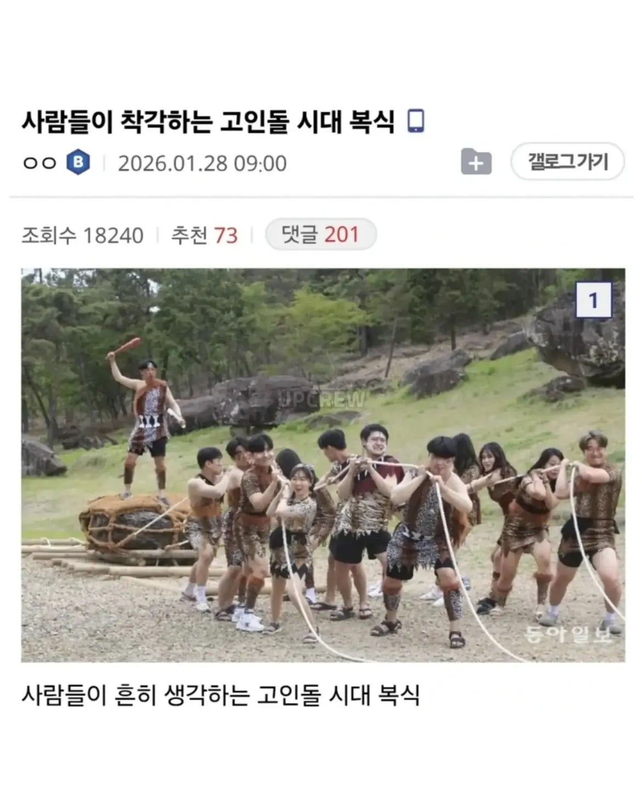
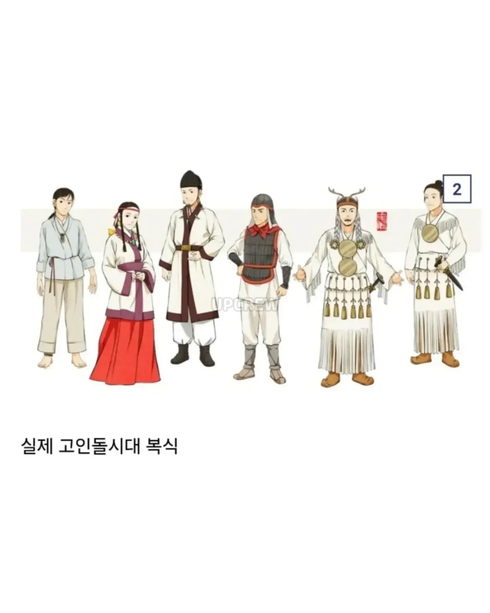
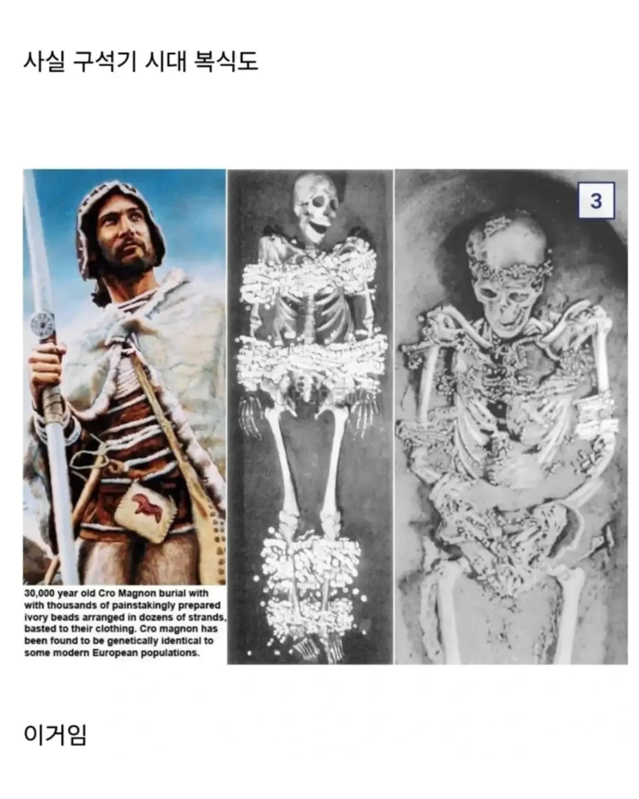
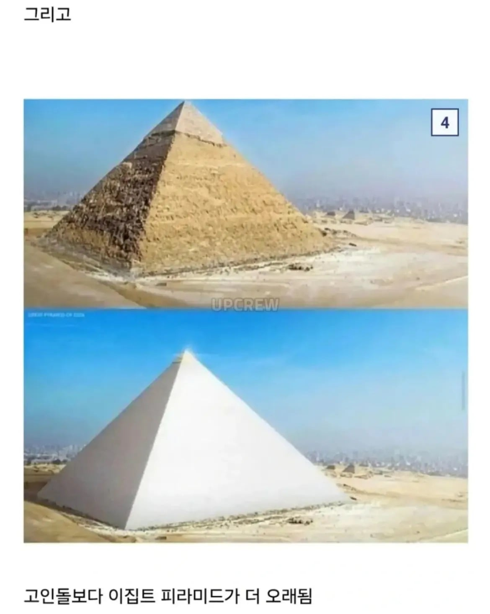
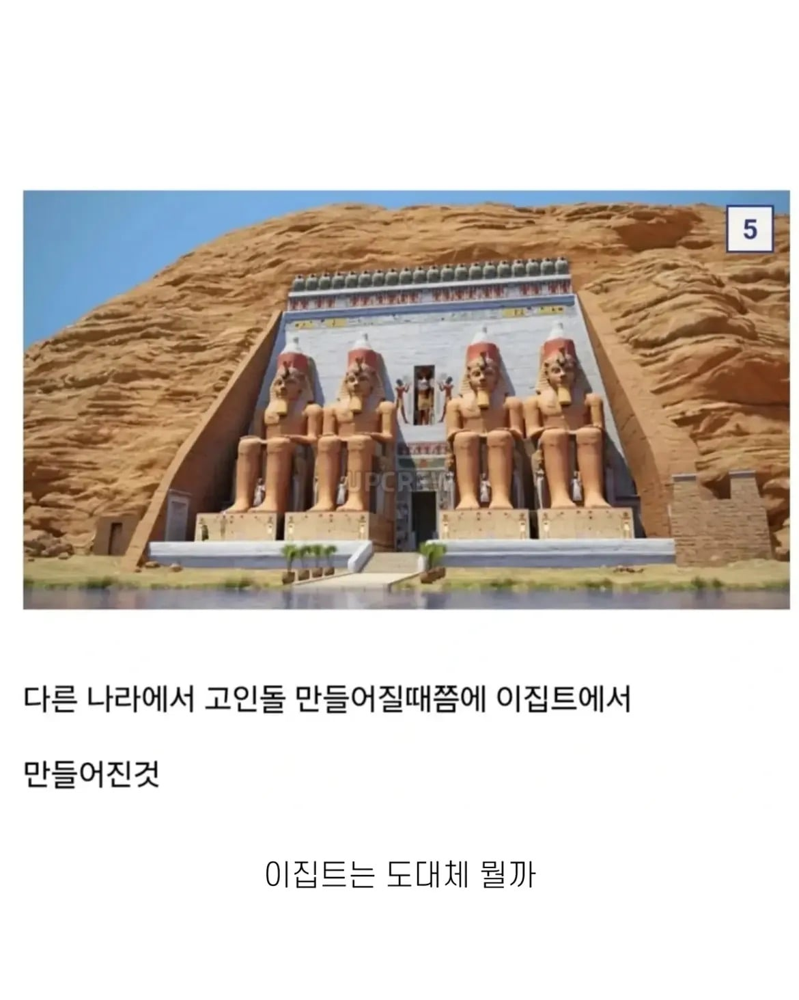

기승전 이집트





기승전 이집트
삼집트라도 하지 우리 조상님들
아오 시발 첫댓에만 터졌으면 그냥 넘어갔을텐데 대댓에 빵터져버렸네 ㅋㅋ
쩜오집트는 우주제패했음
이집트때 맘모스 돌아댕김 이거하나만으로도...
그치 청동기 시절이라 우가우가시절은 아닌데 ㅋㅋ 뭔가 이미지가 그래
로스트테크놀러지인가 뭔가 그거인가
사실 그렇지 그때나 지금이나 이 반도의 겨울이란게 추워 뒤지겠는건 똑같았을텐데 어떻게 웃통까고 돌아다니겠음 꽁꽁 싸매지 ㅋㅋ
그렇네. 처음생각해본 방향이야
게다가 그시절은 아직 빙하기 끝나기 전이라 더 뒤지게 추웠단 거임
저때는 이미 빙하기 끝난 뒤임. 빙하기 끝나가고 좀 따뜻해졌을 때가 신석기
구석기 정도는 되어야...?
피라미드도 사실 외관이 전부 대리석 이였다더만
고인돌은 청동기시대입니다
청동기시대 한반도에서는 고조선이 건국되었습니다
우가우가챠챠챠가 아님미다
하긴 그정도 노동을 시키려면 우가우가로는 안되겠지...
솔직히 괴리감이 드는건 사실임
고인돌은 거의 우가우가 느낌인데
알고보면 고조선 시대라니 ㅋㅋㅋ
정보) 전 세계 고인돌의 절반 정도가 한반도에 밀집되어 있다
ㅋㅋㅋ ㅇㄱㅈㅉㅇ? 왜지? ㅋㅋ
그만큼 제사가 중요한 근본 유교국가라는거지
유행이라
유행에 민감한 민족
전세계 고인돌 절반이 한반도에 몰려있고
한반도 고인돌의 절반이 전라남도에 몰려있음
이거 완전 고라니잖아
?? : 창우 니 복식호흡하나
피라미드도 '쫌 큰 고인돌' 아님?
미친 이집트;
미래인들도 지구 연구하다가 어디는 화성으로 로켓 쏘는데 같은 시기에 어디는 판자집에서 과일따다 먹고 산다고 나오면 놀랄 듯
선사시대 복식인가
근데 구석기 시대 기간이 엄청 길잖음. 차이가 있지 않을라나?
제가 옛날이라고 말하면 기원전을 말하는 거예요
이집트는 근데 지금 주요산업이 관광밖에 없나?
운하
오디세이아가 청동기 시대잖아
현대 21세기 - 와 피라미드! 4000년 전에 만들어진 고대 유적!
기원전 로마 - 와 피라미드! 2000년 전에 만들어진 고대 유적!
저거입고 돌아다닐때는 동굴살이 시절인가
ㅇㅇ
석기시대임 ㅋㅋㅋ
프레데터가 만든거 못봄? 영화로도 나왔어
저런 우가우가 동물 옷은 구석기나 신석기라고 하네 고인돌이 있던 청동기에는 직조 기술이 발전해서 주로 삼베나 모시 옷을 입었대 물론 추운 지방에는 여전히 가죽도 입었겠지만
정보 ) 고대 이집트인들은 석판으로 듀얼을 했다
천문과 치수의 발달은 곧 과학의 발달, 일정한 범람으로 인한 농업의 발달
단군 할아버지도 그림에 한복 같은 거 입고 있는데..
그건 어차피 상상도니까
현대 사람 : 와 옛날 사람이 저걸 만들었다고? 쩐다!
1000년전 사람 : 와 옛날 사람이 저걸 만들었다고? 쩐다!
2000년전 사람 : 와 옛날 사람이 저걸 만들었다고? 쩐다!
3000년전 사람 : 와 옛날 사람이 저걸 만들었다고? 쩐다!
4000년전 사람 : 이걸 만들라고요? 저희가요? ...
영화 오딧세이랑 중국 춘추전국시대 청동기임
고인돌이 아니라 철기 보급까지 엄청 긴시기가 다 청동기
저 정도면 왕족이나 족장은 됐겠지, 일반인은 튜닉 정도
이집트가 이렇게 쩌는데
일집트는 얼마나 대단했을까